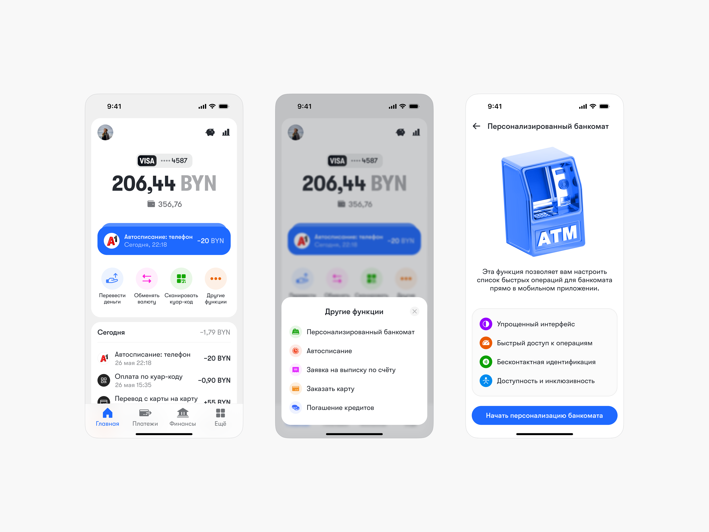
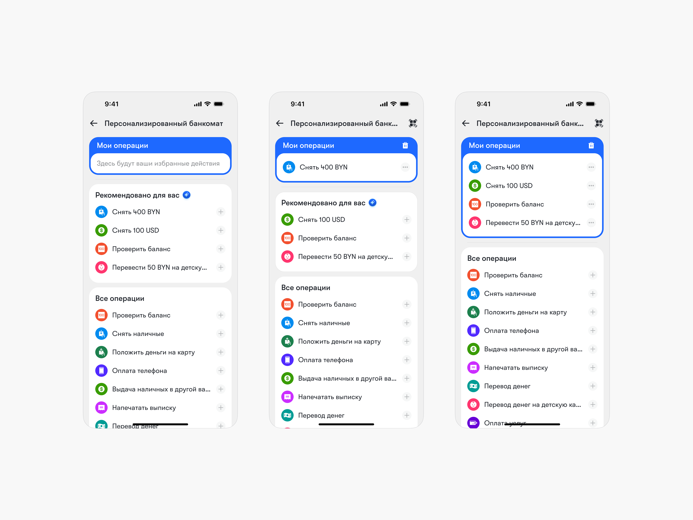
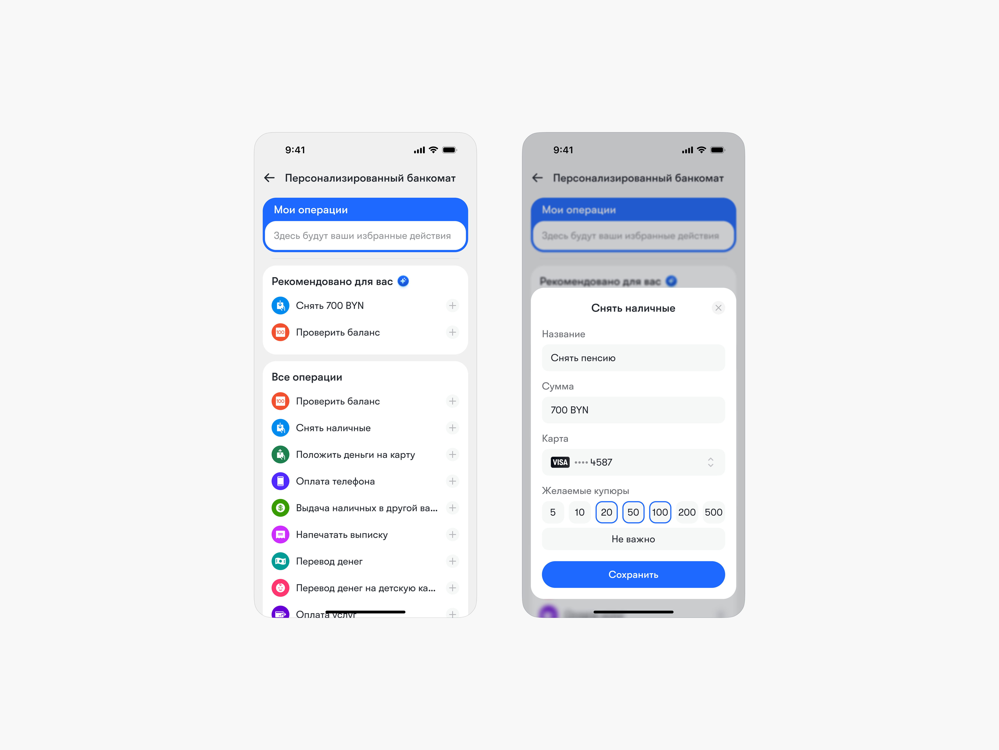
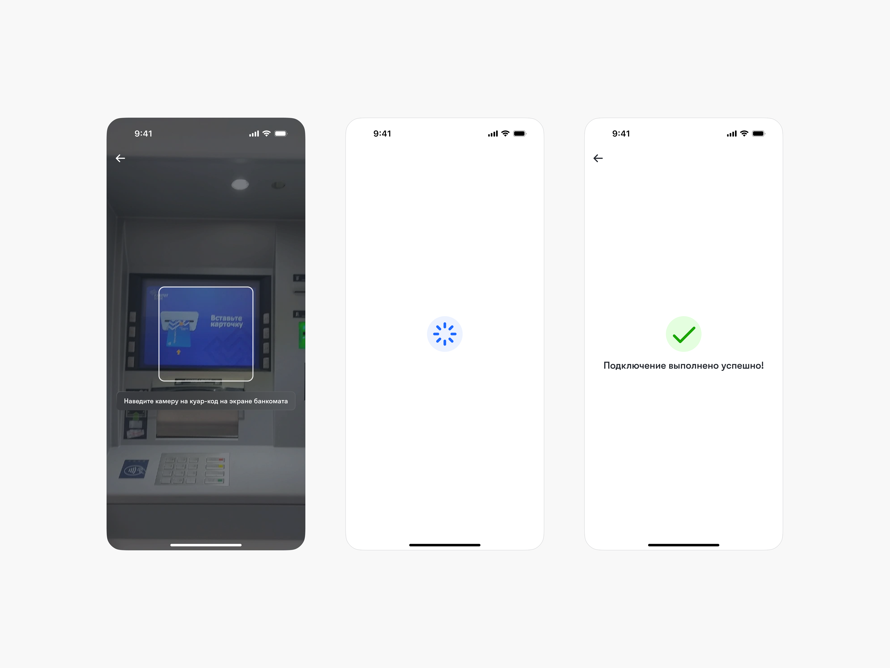
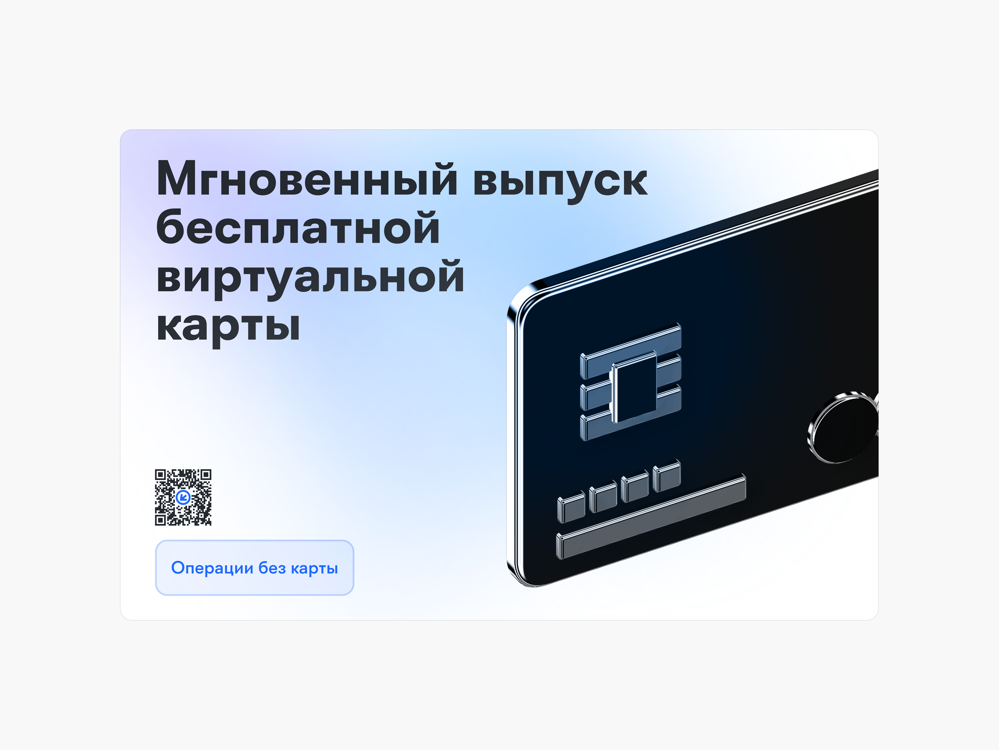
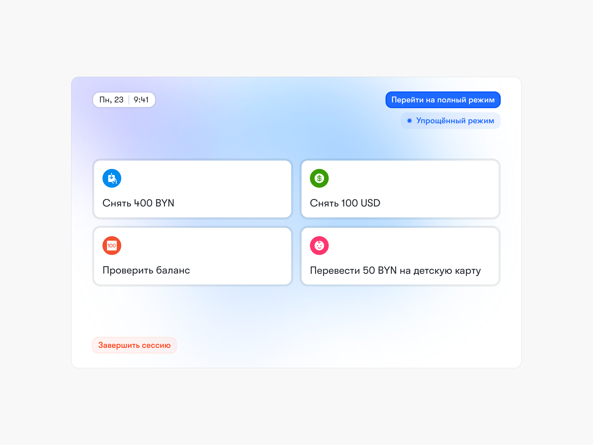
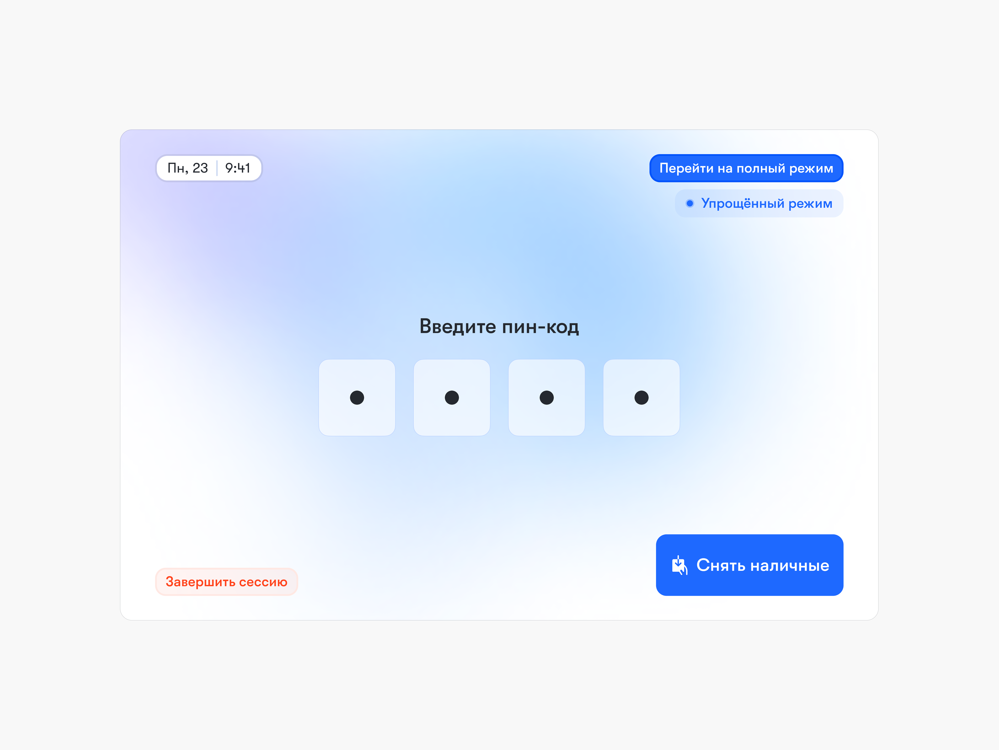
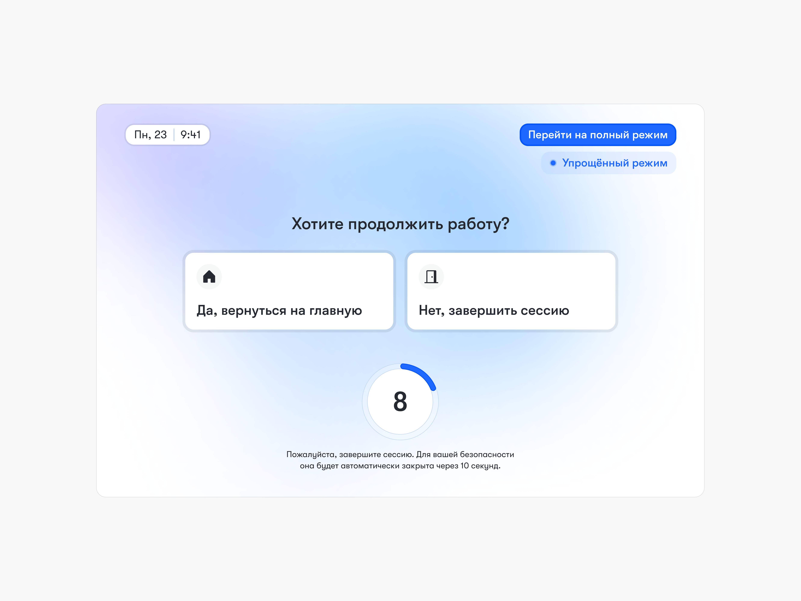
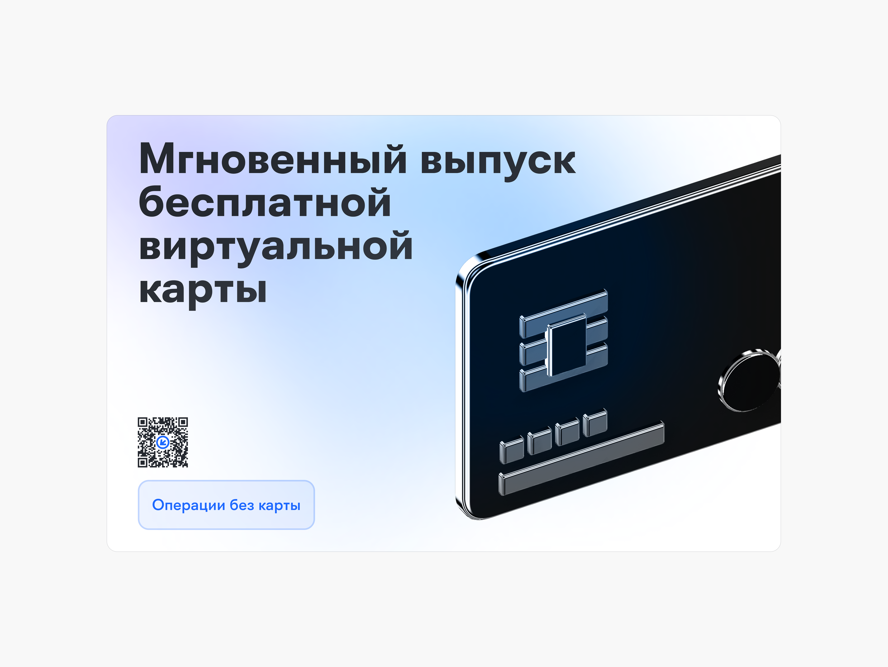
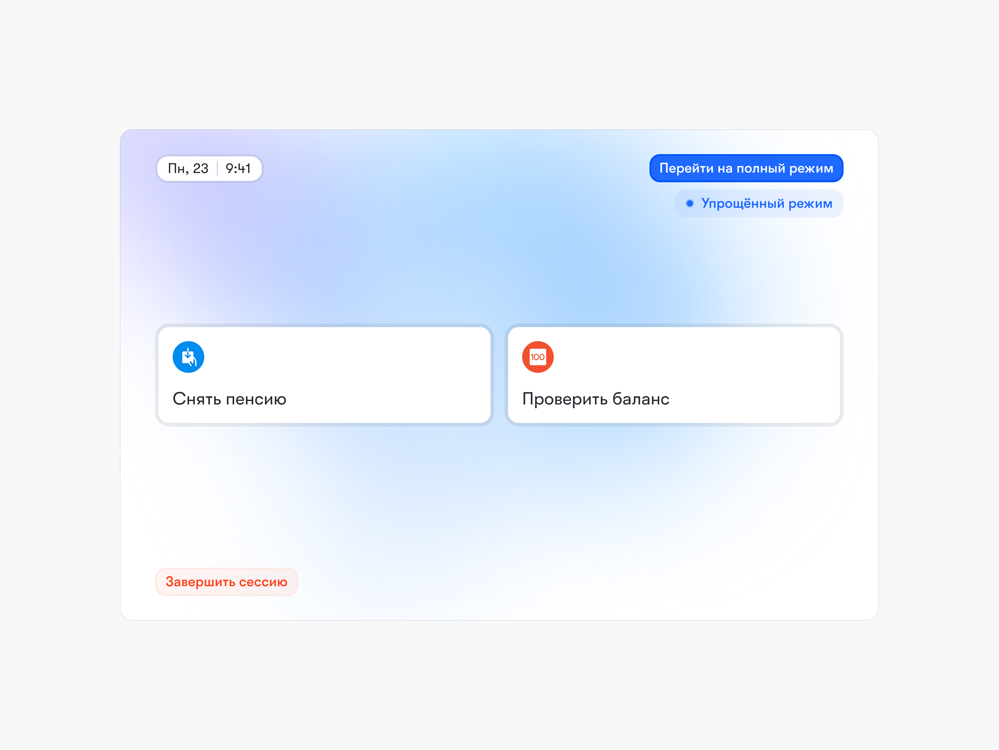

Совершенствование пользовательского опыта банкомата
Задача
Разработать решение для повышения удобства и эффективности использования банкоматов.
Обозначение цели
Банкоматы являются неотъемлемой частью финансовой жизни. Несмотря на то что эта технология существует давно и прочно интегрирована в нашу повседневность, пользовательский опыт кардинально не менялся.
Улучшение взаимодействия с банкоматом позволит клиентам надёжно, безопасно, просто и комфортно выполнять денежные операции. Это, в свою очередь, повысит доверие к банку и его услугам, привлечёт новых клиентов, снизит нагрузку на представителей банка и службу поддержки. Кроме того, это расширит предоставление услуг на недостаточно охваченные аудитории, что в совокупности может привести к значительному увеличению доходов компании.
Определение аудитории
Две основные группы, на которые банк распространяет свои услуги, — это юридические и физические лица. В рамках нашей задачи мы сконцентрируемся на физических лицах.
Банкоматами пользуются люди разных возрастов, доходов, социальных классов и групп. Но можно стратифицировать пользователей по их опыту использования и определённым особенностям, которые обуславливают их пользовательский опыт.
Молодёжь и люди среднего возраста
Эта группа клиентов обычно хорошо разбирается в технологиях, часто пользуется банкоматом, и у них нет проблем с ним справиться. Это также самая крупная когорта клиентов банка, поскольку они составляют основную часть экономически активного населения и, соответственно, чаще и больше взаимодействуют с финансовыми услугами.
Подростки
Хотя они несовершеннолетние и не входят в общую когорту рабочей силы, подростки всё больше расширяют свои экономические права и могут являться клиентами банка. Современные подростки не имеют проблем с тем, чтобы разобраться в технических аспектах банкомата или мобильного приложения, но они не так финансово грамотны, как взрослые люди, и требуют большего контроля со стороны родителей.
Пожилые люди
Часто цифровые продукты не так просто им даются, хотя пожилые люди всё равно являются экономически активными, и им необходим такой же доступ к услугам и продуктам банка.
Иностранцы
Им также необходимо пользоваться банкоматом, и эти пользователи ожидают, что их опыт будет учтён, а свои потребности они смогут удовлетворить на привычном языке.
Люди с особыми потребностями здоровья
Существует много состояний здоровья, которые затрудняют пользование банкоматом, и улучшения во взаимодействии с ним могут помочь клиентам, нуждающимся в дополнительных функциях.
Понимание контекста и потребностей аудитории
Банкоматы размещаются таким образом, чтобы человек мог получить к ним доступ быстро, в удобное время и, обычно, близко к местам, где совершаются денежные расчёты. Поэтому это, как правило, людные места, например, центр города, зоны высокой концентрации людей в районах и отделения банков.
Если банкомат вынесен на улицу, приходится пользоваться им в различных погодных условиях: может идти снег, дождь, светить солнце и засвечивать экран. Кроме того, около банкомата часто собираются очереди, что нервирует людей и может создавать давление на того, кто им в этот момент пользуется.
Клиенты ожидают, что банкомат будет доступен 24/7. Бесконтактная оплата широко распространилась и вошла в обиход, поэтому банкомат должен её поддерживать. Важным моментом остаются безопасность и обеспечение конфиденциальности действий.
Основные функции, которые предлагает банкомат:
- приём и выдача наличных;
- проверка баланса на счёте;
- печать выписок;
- оплата услуг;
- перевод денег на другие счета;
- выдача наличных в другой валюте;
- оплата кредитов и пополнение депозитов;
- действия с картой (активация, блокировка, смена PIN-кода и другое).
Из всех перечисленных функций эксклюзивными для банкомата являются операции с наличными — их получение и приём, — а также, в некоторых случаях, печать выписок.
Пользовательские истории
Как пожилая женщина, я хочу понятно и безопасно выполнять необходимые операции в банкомате, чтобы избежать ошибок и чувствовать себя уверенно.
Как пожилой человек с нарушениями зрения, я хочу, чтобы интерфейс банкомата был четким и контрастным, чтобы я мог совершать транзакции самостоятельно и без напряжения.
Как занятой специалист, я хочу быстро выполнять банковские операции, чтобы сэкономить время и не стоять в очереди.
Как родитель, я хочу иметь умеренный контроль за деньгами моего ребёнка, чтобы быть спокойным за его траты и предотвратить нежелательные расходы.
Как родитель, я хочу иметь возможность контролировать и управлять тратами своего ребёнка, чтобы обеспечить его финансовую безопасность и научить основам финансовой грамотности.
Генерация идей
В результате мозгового штурма были сформулированы следующие идеи:
- редизайн интерфейса;
- упрощённый режим;
- контекстная адаптация;
- персонализированный банкомат;
- редизайн физического оборудования.
Персонализированный банкомат
Пользователь сможет настроить через мобильный банкинг список «любимых» и наиболее частых операций, которые будут быстро доступны на экране банкомата после бесконтактной идентификации, минимизируя количество шагов и упрощая взаимодействие.
Это решение позволит продолжить концепцию интеграции мобильного приложения с банкоматом.
Приоритизация и выбор идеи
Влияние дизайн-решения на разнообразные сегменты пользователей:
Молодёжь и люди среднего возраста
Эта группа хорошо разбирается в технологиях, поэтому данная функция может помочь им сэкономить важный ресурс — время.
Подростки
Быстрые функции помогут подросткам снизить порог перед денежными и банковскими операциями и раньше научиться их совершать.
Пожилые люди
Эту группу мы выделим отдельно и будем приоритизировать в данном решении. Возможность настроить несколько наиболее важных для них функций через мобильное приложение позволит уменьшить страх перед банкоматом.
Люди с особыми потребностями здоровья
Благодаря этой функции элементов на экране станет меньше, они будут более крупными и чёткими, что в сочетании с интеграцией аудиоассистента сделает опыт использования более удобным и доступным.
Иностранцы
Эту группу наше решение будет охватывать в меньшей степени. Стандартный многоязычный интерфейс они, скорее всего, найдут более полезным.
Это решение напрямую удовлетворяет ключевые потребности клиентов:
- ускоряется процесс использования;
- меньшее количество шагов упрощает использование;
- снижается стресс и напряжение;
- повышается доступность банкомата;
- обеспечивается безопасность благодаря современным методам идентификации.






После этого пользователь видит персонализированный экран функций с возможностью перехода на полноценный режим интерфейса банкомата.



Примерно так выглядит флоу пожилого человека в новом интерфейсе банкомата:



Измерение успеха
Для оценки эффективности предложенного дизайн-решения необходимо определить метрики. Если данное решение будет успешным, мы увидим:
-
Сокращение времени выполнения операции
Среднее время, затрачиваемое пользователем на выполнение типовых операций через персонализированный банкомат по сравнению со стандартным использованием.
Существенное сокращение времени за счет предварительной настройки и упрощенного интерфейса.
-
Повышение показателя успешности задач
Процент успешно завершенных операций без ошибок, особенно для сложных или редко выполняемых операций.
Увеличение процента успешных операций, особенно среди пожилых людей и менее опытных пользователей.
-
Увеличение частоты использования функции
Количество уникальных пользователей, регулярно использующих функцию персонализации операций в мобильном приложении.
Высокий уровень вовлеченности в новую функциональность.
-
Рост показателя удовлетворенности клиентов
Измерение готовности клиентов рекомендовать банк и его услуги другим.
Увеличение NPS за счет повышения удобства, безопасности и инновационности сервиса.
-
Снижение количества обращений в службу поддержки
Уменьшение числа обращений клиентов, связанных с трудностями при использовании банкомата.
Сокращение операционных расходов и повышение эффективности работы поддержки.